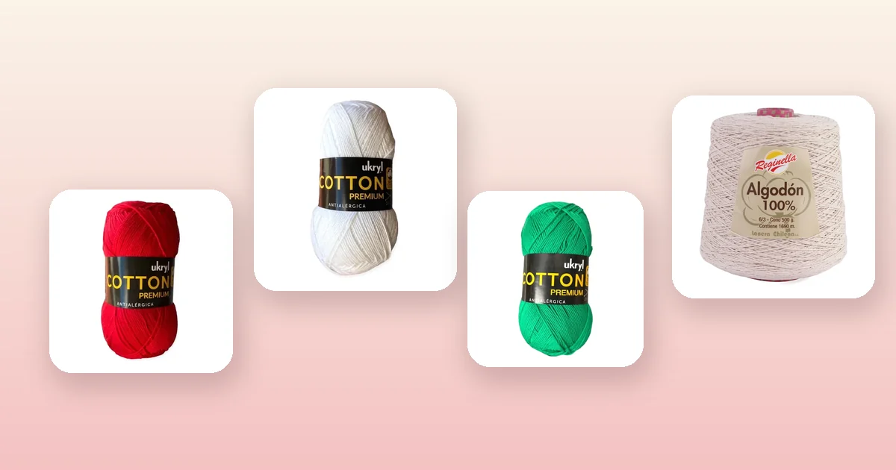

Proyectos de crochet
Cómo tejer una agarradera a crochet paso a paso
Las agarraderas a crochet son el proyecto de cocina más útil que puedes tejer: protegen tus manos del calor, decoran la cocina y se hacen en una tarde. En esta guía te enseñamos 3 diseños — cuadrada clásica, circular y con bolsillo —, por qué el algodón es obligatorio, las medidas correctas, el punto térmico que aísla el doble y cómo hacer agarraderas dobles que realmente protegen.

Materiales: por qué solo algodón
La regla de oro de las agarraderas tejidas es usar exclusivamente algodón 100%. El algodón resiste temperaturas altas sin derretirse, no se deforma con el calor y absorbe la humedad del vapor. El acrílico, en cambio, puede fundirse al tocar una olla caliente y dejar residuos plásticos en la piel — un riesgo real que hay que evitar.
Lo que necesitas:
- Ganchillo de 3 a 3,5 mm (un número menor al recomendado en la etiqueta del hilo) para lograr un tejido bien cerrado y denso que aísle del calor. Si no estás segura del tamaño, revisa la guía de qué aguja o ganchillo usar.
- Aguja lanera para esconder las hebras y coser las capas.
- Tijeras y cinta métrica.
- Marcador de puntos para las vueltas circulares.
Los mejores hilos para agarraderas:
- Hilo de Algodón Rojo: un clásico de cocina. 100 g y 200 m de algodón puro, firme y con excelente definición de puntos.
- Hilo de Algodón Blanco: combina con todo y es perfecto para agarraderas con diseños bicolor. Mismo grosor y metraje.
- Hilo de Algodón Verde Navidad: ideal para juegos de agarraderas navideñas o como regalo. Combina con rojo y blanco para un set festivo.
- Cono de Algodón Crudo: 500 g y 1.690 m de algodón 100%. Si vas a tejer varios juegos o regalar, el cono rinde mucho más y es más económico por metro.
Medidas y grosor ideal
Una agarradera debe ser lo suficientemente grande para cubrir la mano y lo suficientemente gruesa para aislar del calor. Estas son las medidas recomendadas:
| Tipo de agarradera | Medida | Grosor | Hilo (aprox.) |
|---|---|---|---|
| Cuadrada estándar | 20 × 20 cm | Doble capa | 35 – 40 g |
| Circular | 20 cm diámetro | Doble capa | 30 – 35 g |
| Con bolsillo (manopla) | 22 × 20 cm | Triple en la palma | 45 – 55 g |
| Mini (decorativa) | 15 × 15 cm | Simple | 15 – 20 g |
Un ovillo de 100 g de hilo de algodón rinde para 2 a 3 agarraderas dobles. Si quieres tejer un juego de 4 como regalo, compra 2 ovillos. Para saber exactamente cuánto hilo necesitas, consulta la guía de cuánta lana necesito para tejer.
Diseño 1: agarradera cuadrada clásica
La agarradera cuadrada es el diseño más versátil y fácil de tejer. Se trabaja en filas de ida y vuelta.
Patrón con punto bajo (nivel principiante)
- Cadena de inicio: haz 36 cadenas (para 20 cm con ganchillo de 3 mm y hilo de algodón 8/6). Ajusta si tu muestra da diferente.
- Fila 1: 1 punto bajo (pb) en la segunda cadena desde el ganchillo. 1 pb en cada cadena hasta el final = 35 pb. Gira.
- Fila 2 en adelante: 1 cadena al aire (no cuenta como punto), 35 pb. Gira. Repite hasta tener un cuadrado de 20 cm de alto (aproximadamente 38 a 40 filas).
- Borde: sin cortar el hilo, teje una vuelta de pb alrededor de todo el cuadrado, haciendo 3 pb en cada esquina para que giren bien.
Si quieres repasar los puntos, revisa la guía de puntos básicos de crochet para principiantes.
Variante: punto térmico (mayor aislación)
El punto térmico (o thermal stitch) crea una textura gruesa de doble cara que aísla mucho mejor que el punto bajo simple. Es ideal para agarraderas de uso diario.
- Cadena de inicio: 36 cadenas.
- Fila 1: 1 pb en la segunda cadena, 1 pb en cada cadena. Gira.
- Fila 2: 1 cadena al aire, inserta el ganchillo en el punto de abajo tomando solo la hebra delantera. Teje 1 pb. Repite hasta el final. Gira.
- Fila 3: 1 cadena al aire, inserta el ganchillo tomando solo la hebra trasera. Teje 1 pb en cada punto. Gira.
- Alterna filas 2 y 3 hasta completar 20 cm.
El resultado es un tejido que se ve igual por ambas caras y tiene el doble de grosor que el punto bajo normal. Perfecto para cocinas donde se usa mucho el horno.
Diseño 2: agarradera circular
Las agarraderas circulares son decorativas y prácticas. Se trabajan en espiral desde el centro.
- Anillo mágico: 6 pb dentro del anillo. Marca el inicio de la vuelta.
- Vuelta 2: 2 pb en cada punto = 12 pb.
- Vuelta 3: (1 pb, aumento) × 6 = 18 pb.
- Vuelta 4: (2 pb, aumento) × 6 = 24 pb.
- Vuelta 5: (3 pb, aumento) × 6 = 30 pb.
- Sigue el patrón de aumentos (4 pb + aumento, luego 5 pb + aumento, etc.) hasta alcanzar 20 cm de diámetro (alrededor de 10 a 11 vueltas).
- Borde final: 1 vuelta de punto cangrejo (pb de derecha a izquierda) para un acabado decorativo y firme.
Diseño 3: agarradera con bolsillo
La agarradera con bolsillo funciona como una mini manopla: metes la mano dentro y puedes agarrar ollas y bandejas con más seguridad. Es el diseño más práctico para cocina.
- Teje un rectángulo de 22 × 40 cm en punto bajo o punto térmico (40 cm es el doble de 20 cm, porque lo doblarás).
- Dobla el rectángulo por la mitad formando un cuadrado de 22 × 20 cm.
- Cose o une con pb los dos lados largos, dejando un lado corto abierto (la entrada de la mano).
- Teje 1 vuelta de pb alrededor de la abertura para reforzar el borde.
- Agrega la presilla en una esquina de la abertura.
Este diseño ya es doble por naturaleza (está doblado). Si quieres más protección, agrega una capa extra de punto bajo dentro del bolsillo, cosida solo en los bordes.
Cómo hacer agarraderas dobles
Una capa simple de crochet no aísla lo suficiente del calor. Para una agarradera funcional necesitas al menos dos capas. Hay dos formas de hacerlo:
Opción A: dos cuadrados cosidos
- Teje dos cuadrados iguales (mismo tamaño, misma tensión).
- Ponlos uno sobre otro, revés con revés.
- Une por el borde con una vuelta de pb, insertando el ganchillo en ambas capas a la vez.
Opción B: tejido continuo (sin costura)
- Teje el primer cuadrado sin cortar el hilo.
- Gira 90° y teje pb por un lateral hasta la esquina opuesta.
- Sigue tejiendo el segundo cuadrado sobre el primero, usando las filas del primer cuadrado como base.
- Cierra con una vuelta de pb por todo el borde.
La opción A es más fácil para principiantes y permite combinar colores (un color por cara). La opción B es más limpia y no tiene costuras, pero requiere más concentración.
Terminaciones y presilla
Toda agarradera necesita una presilla para colgar de un gancho en la cocina. Así se hace:
- En la última esquina de la vuelta de borde, teje 8 a 10 cadenas.
- Une con punto raso al mismo punto donde empezaste las cadenas, formando un aro.
- Teje 12 a 15 pb alrededor de las cadenas para cubrir el aro y darle firmeza.
- Cierra con punto raso. Corta el hilo y escóndelo con aguja lanera.
Esconde todas las hebras por dentro de la agarradera, entre las dos capas, donde no se verán ni se sentirán. Pasa al menos 5 cm de hilo en cada dirección antes de cortar. Para más técnicas de acabado, visita la guía de cómo cuidar prendas tejidas.
Ideas de colores para la cocina
Las agarraderas son una forma fácil de darle vida a la cocina. Algunas combinaciones que siempre funcionan:
- Clásico navideño: rojo, verde y blanco. Perfecto con Hilo de Algodón Rojo, Verde Navidad y Blanco.
- Rústico neutro: crudo, arena y mostaza. Un set elegante con el Cono de Algodón Crudo combinado con Hilo Mostaza.
- Moderno minimalista: blanco y negro, o blanco y azul marino. Limpio y actual.
- Frutal de verano: naranja, sandía y menta. Colores alegres que suman energía a la cocina.
Teje un juego de 4 agarraderas en la misma combinación para un regalo práctico y con mucha onda. Explora todos los colores disponibles en hilos Reginella.
Errores comunes y soluciones
- La agarradera no protege del calor: el tejido es muy abierto. Usa un ganchillo más chico (3 mm en vez de 4 mm) y teje doble capa. Si sigue sin aislar, añade una tercera capa o usa punto térmico.
- Se deforma después de lavarla: no la dejaste secar plana. Después de lavar, estira la agarradera a su forma original y déjala secar sobre una toalla.
- El cuadrado sale como trapecio: estás ganando o perdiendo puntos en cada fila. Cuenta los puntos al final de cada fila — siempre deben ser 35 (o el número con que empezaste).
- Los bordes quedan disparejos: la cadena al girar debe ser consistente. No la cuentes como punto y asegúrate de tejer en el primer punto de la fila, no en la cadena.
- Los colores se mezclan feo: cuando cambies de color, teje el último pb de la fila anterior con el color nuevo (inserta el ganchillo, lazada con el color viejo, lazada con el color nuevo y pasa por los dos lazos).
Preguntas frecuentes
¿Qué hilo se usa para agarraderas a crochet?
Solo hilo de algodón 100%. El algodón resiste el calor sin derretirse ni deformarse, a diferencia del acrílico que puede fundirse con temperaturas altas. El hilo de algodón 8/6 de 200 m es ideal: da un tejido denso y grueso que aísla bien del calor.
¿Qué tamaño debe tener una agarradera a crochet?
Una agarradera estándar mide entre 18 y 22 cm de lado (cuadrada) o de diámetro (circular). Con 20 cm cubres cómodamente la mano y puedes agarrar ollas y bandejas sin quemarte. Para agarraderas decorativas que no van al calor, 15 cm es suficiente.
¿Cuánto hilo necesito para una agarradera a crochet?
Una agarradera doble (dos capas) de 20 cm usa entre 30 y 40 g de hilo de algodón. Con un ovillo de 100 g puedes tejer 2 o 3 agarraderas. Si tejes un juego de 4, un ovillo y medio es más que suficiente.
¿Se pueden lavar las agarraderas tejidas a crochet?
Sí. Las agarraderas de algodón se lavan en lavadora con agua caliente sin problemas. El algodón resiste altas temperaturas y se puede planchar. Lava con colores similares y seca al aire o en secadora a temperatura baja.
¿Por qué mi agarradera no protege del calor?
Probablemente el tejido es muy abierto o está hecha con una sola capa. Para que aísle bien, teje con un ganchillo 1 o 2 números más chico que el recomendado y haz la agarradera doble (dos capas cosidas). Asegúrate de usar algodón 100%, no acrílico.